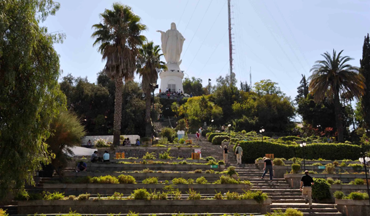
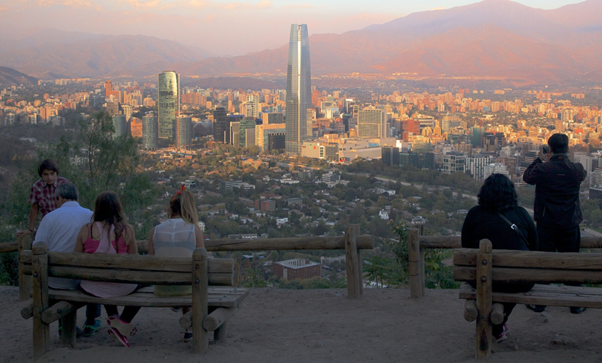

Uma colina com mais de 300 metros de altura, é possível subir lá através de caminhada,funicular ou um teleférico. No topo da colina tem um mirante com uma vista maravilhosa e um centro comercial onde é possível comprar presentes locais como artesanatos e camisas. A vista vale a pena a ida até lá, e as coisas que se pode comprar e ver no centro comercial adiciona à experiência. A melhor opção é subir de teleférico, cansa menos e tem mais vistas ainda.

